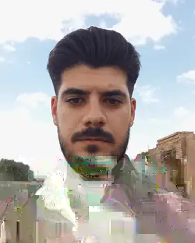

مسیر روشن
توضیح شفاف خدمات، مدارک و مراحل پیش از اقدام.
معرفی رسمی · حورانت۲۴
باور دارم دسترسی به خدمات و اطلاعات درست، باید روشن، ساده و قابلاعتماد باشد؛ بدون سردرگمی و اتلاف وقت.

داستان حورانت۲۴ از دل تجربههای روزمره شروع شد؛ از روزهایی که آدمها برای انجام یک کار اداری، دریافت یک خدمت اینترنتی، پیگیری امور خودرو یا پیدا کردن مسیر درست، به یک راهنمای قابلاعتماد نیاز داشتند.
حجت در برخورد نزدیک با این نیازها، بارها با یک واقعیت روبهرو شد: گاهی سختی کار، خودِ انجام آن نیست؛ سختی اصلی این است که ندانی از کجا شروع کنی، چه مدارکی لازم داری، کدام مسیر درستتر است و چطور وقت و انرژیات را کمتر هدر بدهی.
«چرا راه رسیدن به خدمات موردنیاز مردم نباید سادهتر، روشنتر و در دسترستر باشد؟»
این پرسش، کمکم از یک فکر روزمره به یک ایده جدی تبدیل شد. ایده ساخت فضایی که مردم بتوانند پیش از اقدام، خدمات را بشناسند، مدارک و مراحل را ببینند و راه ارتباط با پشتیبانی را راحتتر پیدا کنند؛ فضایی فراتر از محدودیت یک دفتر و یک محدوده جغرافیایی.
حورانت۲۴ با همین نگاه شکل گرفت؛ نه صرفاً یک فهرست از خدمات، بلکه تلاشی برای ساختن پلی میان نیاز مردم و راهحل مناسب. مسیری که در آن اطلاعات شفافتر باشد، انتخاب آسانتر شود و فناوری بهجای پیچیده کردن زندگی، بخشی از دشواریهای آن را کم کند.
این مسیر هنوز در حال ساختهشدن است. هر خدمت تازه، هر اصلاح و هر تجربه، فرصتی است برای بهتر کردن چیزی که از یک باور ساده آغاز شد:
فناوری زمانی ارزشمند است که زندگی را سادهتر کند.حورانت۲۴ از یک ایده شکل گرفت: کنار هم قرار دادن راهنمای خدمات، اطلاعات موردنیاز و مسیر ارتباط با پشتیبانی، در فضایی منظم و در دسترس. هدف، ساخت تجربهای روشنتر برای انتخاب و پیگیری مسیر درست است.
توضیح شفاف خدمات، مدارک و مراحل پیش از اقدام.
قرار گرفتن خدمات و محصولات دیجیتال در یک فضای منسجم.
حفظ امکان گفتوگوی مستقیم و انتخاب مسیر ارتباطی دلخواه.
از اینکه بخشی از مسیر حورانت۲۴ هستید، سپاسگزارم.